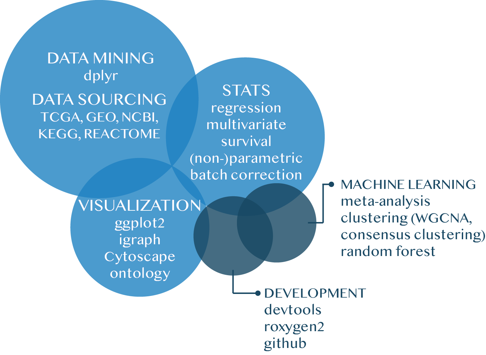
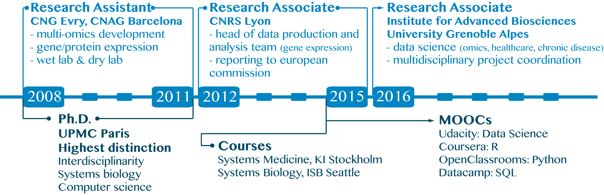

Download my CV
PITCH
PROJECTS
TOOLS
HARD SKILLS
SOFT SKILLS
EXPERIENCE & EDUCATION
FREE TIME
PROFESSIONAL ADRESS
PUBLISHED WORKS
Pitch
With a robust background in biology research and design of analysis pipelines, I switched from molecular data production in wet lab to a genuine passion for data science.
I am eager for a new challenge to apply my competences in data science-oriented projects. I am motivated to develop innovative solutions in a stimulating multidisciplinary environment, while able to ingest and learn new programming languages. I value self-teaching and curiousity, perseverance and teamwork, adaptability and creativity.
Projects
• Deciphering gene expression signature in multimorbidity of allergic disease
After leading a team to produce gene expression data from over 800 participants from European cohorts on allergic diseases, I led their data analysis with classical pipeline: quality check, data cleaning, pre-processing, differential expression, distribution, statistical tests, ontology, network analysis, co-expression network, consensus clustering, machine learning.
A paper is being published. Other papers were published using this dataset (see Published Works).
• Multiomics cancer data exploration from TCGA dataset
TCGA data for all cancer types were retrieved for team needs on various projects. They include mutation data, clinical data, gene expression data. Collaborations ongoing.
• Clustering in mutation data
Iterative clustering was performed on expression data for >2,600 TP53 mutation data. Impact of retrieved clusters on immunogenicity (IEDB) and several expression datasets (lung cancer, TCGA, Li-Fraumeni Syndrome) was investigated. A paper is in preparation
• 9mer generator from protein sequence
The immunogenicity of protein produced from TP53 mutants was queried with IEDB. For this purpose, a 9mer generator was created in R to retrieve all possible 9mers occuring at each codon of the protein with any possible mutation, id est ~70,000 possibilities for a 393 long sequence.
• Meta-analysis from differential gene expression output
A package was created in R to assess meta-analysis from limma output. It includes inverse weighted fixed and random effects statistical calculations, and viz like volcano, funnel, caterpillar, forest plots.
• Gene-ontology relationship network viz
A network generator was created in R to visualize gene-ontology relationship
Tools
| Proficient |
Active Learning |
Familiar |
| R |
Python
numpy
pandas |
Git |
| HTML |
| bash |
Hard skills

Soft skills
| Proficient |
Collaborative Work |
| Communication |
Management |
| Office |
Team management |
Creative Thinking |
| Keynote |
Project Management |
Hypothesis Generation |
| LaTeX |
KPIs
|
Problem Solving |
| Illustrator |
familiar with agile method |
Experience & Education

Free time
Professional address
Institute for Advanced Biosciences
Allée des Alpes
38700 La Tronche
+33 4 76 54 95 76
Published Works
- Variable population prevalence estimates of germline TP53 variants: A gnomAD-based analysis.
de Andrade KC, Frone MN, Wegman-Ostrosky T, Khincha PP, Kim J, Amadou A, Santiago KM, Fortes FP, Lemonnier N, Mirabello L, Stewart DR, Hainaut P, Kowalski LP, Savage SA, Achatz MI.
Hum Mutat. 2019 Jan;40(1):97-105. doi: 10.1002/humu.23673. Epub 2018 Nov 19.
- Systems medicine disease maps: community-driven comprehensive representation of disease mechanisms.
Mazein A, Ostaszewski M, Kuperstein I, Watterson S, Le Novère N, Lefaudeux D, De Meulder B, Pellet J, Balaur I, Saqi M, Nogueira MM, He F, Parton A, Lemonnier N, Gawron P, Gebel S, Hainaut P, Ollert M, Dogrusoz U, Barillot E, Zinovyev A, Schneider R, Balling R, Auffray C.
NPJ Syst Biol Appl. 2018 Jun 2;4:21. doi: 10.1038/s41540-018-0059-y. eCollection 2018.
- A computational framework for complex disease stratification from multiple large-scale datasets.
De Meulder B, Lefaudeux D, Bansal AT, Mazein A, Chaiboonchoe A, Ahmed H, Balaur I, Saqi M, Pellet J, Ballereau S, Lemonnier N, Sun K, Pandis I, Yang X, Batuwitage M, Kretsos K, van Eyll J, Bedding A, Davison T, Dodson P, Larminie C, Postle A, Corfield J, Djukanovic R, Chung KF, Adcock IM, Guo YK, Sterk PJ, Manta A, Rowe A, Baribaud F, Auffray C; U-BIOPRED Study Group and the eTRIKS Consortium.
BMC Syst Biol. 2018 May 29;12(1):60. doi: 10.1186/s12918-018-0556-z.
- DNA methylation in childhood asthma: an epigenome-wide meta-analysis.
Xu CJ, Söderhäll C, Bustamante M, Baïz N, Gruzieva O, Gehring U, Mason D, Chatzi L, Basterrechea M, Llop S, Torrent M, Forastiere F, Fantini MP, Carlsen KCL, Haahtela T, Morin A, Kerkhof M, Merid SK, van Rijkom B, Jankipersadsing SA, Bonder MJ, Ballereau S, Vermeulen CJ, Aguirre-Gamboa R, de Jongste JC, Smit HA, Kumar A, Pershagen G, Guerra S, Garcia-Aymerich J, Greco D, Reinius L, McEachan RRC, Azad R, Hovland V, Mowinckel P, Alenius H, Fyhrquist N, Lemonnier N, Pellet J, Auffray C; BIOS Consortium, van der Vlies P, van Diemen CC, Li Y, Wijmenga C, Netea MG, Moffatt MF, Cookson WOCM, Anto JM, Bousquet J, Laatikainen T, Laprise C, Carlsen KH, Gori D, Porta D, Iñiguez C, Bilbao JR, Kogevinas M, Wright J, Brunekreef B, Kere J, Nawijn MC, Annesi-Maesano I, Sunyer J, Melén E, Koppelman GH.
Lancet Respir Med. 2018 May;6(5):379-388. doi: 10.1016/S2213-2600(18)30052-3. Epub 2018 Feb 26.
- Lysine methylation signaling in pancreatic cancer.
Roth GS, Casanova AG, Lemonnier N, Reynoird N.
Curr Opin Oncol. 2018 Jan;30(1):30-37. doi: 10.1097/CCO.0000000000000421.
- Higher-than-expected population prevalence of potentially pathogenic germline TP53 variants in individuals unselected for cancer history.
de Andrade KC, Mirabello L, Stewart DR, Karlins E, Koster R, Wang M, Gapstur SM, Gaudet MM, Freedman ND, Landi MT, Lemonnier N, Hainaut P, Savage SA, Achatz MI.
Hum Mutat. 2017 Dec;38(12):1723-1730. doi: 10.1002/humu.23320. Epub 2017 Sep 21.
- Exposure to Traffic-Related Air Pollution and Serum Inflammatory Cytokines in Children.
Gruzieva O, Merid SK, Gref A, Gajulapuri A, Lemonnier N, Ballereau S, Gigante B, Kere J, Auffray C, Melén E, Pershagen G.
Environ Health Perspect. 2017 Jun 16;125(6):067007. doi: 10.1289/EHP460.
- Computational analysis of multimorbidity between asthma, eczema and rhinitis.
Aguilar D, Pinart M, Koppelman GH, Saeys Y, Nawijn MC, Postma DS, Akdis M, Auffray C, Ballereau S, Benet M, García-Aymerich J, González JR, Guerra S, Keil T, Kogevinas M, Lambrecht B, Lemonnier N, Melen E, Sunyer J, Valenta R, Valverde S, Wickman M, Bousquet J, Oliva B, Antó JM.
PLoS One. 2017 Jun 9;12(6):e0179125. doi: 10.1371/journal.pone.0179125. eCollection 2017.
- Mechanisms of the Development of Allergy (MeDALL): Introducing novel concepts in allergy phenotypes.
Anto JM, Bousquet J, Akdis M, Auffray C, Keil T, Momas I, Postma DS, Valenta R, Wickman M, Cambon-Thomsen A, Haahtela T, Lambrecht BN, Lodrup Carlsen KC, Koppelman GH, Sunyer J, Zuberbier T, Annesi-Maesano I, Arno A, Bindslev-Jensen C, De Carlo G, Forastiere F, Heinrich J, Kowalski ML, Maier D, Melén E, Smit HA, Standl M, Wright J, Asarnoj A, Benet M, Ballardini N, Garcia-Aymerich J, Gehring U, Guerra S, Hohmann C, Kull I, Lupinek C, Pinart M, Skrindo I, Westman M, Smagghe D, Akdis C, Andersson N, Bachert C, Ballereau S, Ballester F, Basagana X, Bedbrook A, Bergstrom A, von Berg A, Brunekreef B, Burte E, Carlsen KH, Chatzi L, Coquet JM, Curin M, Demoly P, Eller E, Fantini MP, von Hertzen L, Hovland V, Jacquemin B, Just J, Keller T, Kiss R, Kogevinas M, Koletzko S, Lau S, Lehmann I, Lemonnier N, Mäkelä M, Mestres J, Mowinckel P, Nadif R, Nawijn MC, Pellet J, Pin I, Porta D, Rancière F, Rial-Sebbag E, Saeys Y, Schuijs MJ, Siroux V, Tischer CG, Torrent M, Varraso R, Wenzel K, Xu CJ.
J Allergy Clin Immunol. 2017 Feb;139(2):388-399. doi: 10.1016/j.jaci.2016.12.940. Review.
- Genome-Wide Interaction Analysis of Air Pollution Exposure and Childhood Asthma with Functional Follow-up.
Gref A, Merid SK, Gruzieva O, Ballereau S, Becker A, Bellander T, Bergström A, Bossé Y, Bottai M, Chan-Yeung M, Fuertes E, Ierodiakonou D, Jiang R, Joly S, Jones M, Kobor MS, Korek M, Kozyrskyj AL, Kumar A, Lemonnier N, MacIntyre E, Ménard C, Nickle D, Obeidat M, Pellet J, Standl M, Sääf A, Söderhäll C, Tiesler CMT, van den Berge M, Vonk JM, Vora H, Xu CJ, Antó JM, Auffray C, Brauer M, Bousquet J, Brunekreef B, Gauderman WJ, Heinrich J, Kere J, Koppelman GH, Postma D, Carlsten C, Pershagen G, Melén E.
Am J Respir Crit Care Med. 2017 May 15;195(10):1373-1383. doi: 10.1164/rccm.201605-1026OC.
- Epigenome-Wide Meta-Analysis of Methylation in Children Related to Prenatal NO2 Air Pollution Exposure.
Gruzieva O, Xu CJ, Breton CV, Annesi-Maesano I, Antó JM, Auffray C, Ballereau S, Bellander T, Bousquet J, Bustamante M, Charles MA, de Kluizenaar Y, den Dekker HT, Duijts L, Felix JF, Gehring U, Guxens M, Jaddoe VV, Jankipersadsing SA, Merid SK, Kere J, Kumar A, Lemonnier N, Lepeule J, Nystad W, Page CM, Panasevich S, Postma D, Slama R, Sunyer J, Söderhäll C, Yao J, London SJ, Pershagen G, Koppelman GH, Melén E.
Environ Health Perspect. 2017 Jan;125(1):104-110. doi: 10.1289/EHP36. Epub 2016 Jul 22.
- DNA Methylation in Newborns and Maternal Smoking in Pregnancy: Genome-wide Consortium Meta-analysis.
Joubert BR, Felix JF, Yousefi P, Bakulski KM, Just AC, Breton C, Reese SE, Markunas CA, Richmond RC, Xu CJ, Küpers LK, Oh SS, Hoyo C, Gruzieva O, Söderhäll C, Salas LA, Baïz N, Zhang H, Lepeule J, Ruiz C, Ligthart S, Wang T, Taylor JA, Duijts L, Sharp GC, Jankipersadsing SA, Nilsen RM, Vaez A, Fallin MD, Hu D, Litonjua AA, Fuemmeler BF, Huen K, Kere J, Kull I, Munthe-Kaas MC, Gehring U, Bustamante M, Saurel-Coubizolles MJ, Quraishi BM, Ren J, Tost J, Gonzalez JR, Peters MJ, Håberg SE, Xu Z, van Meurs JB, Gaunt TR, Kerkhof M, Corpeleijn E, Feinberg AP, Eng C, Baccarelli AA, Benjamin Neelon SE, Bradman A, Merid SK, Bergström A, Herceg Z, Hernandez-Vargas H, Brunekreef B, Pinart M, Heude B, Ewart S, Yao J, Lemonnier N, Franco OH, Wu MC, Hofman A, McArdle W, Van der Vlies P, Falahi F, Gillman MW, Barcellos LF, Kumar A, Wickman M, Guerra S, Charles MA, Holloway J, Auffray C, Tiemeier HW, Smith GD, Postma D, Hivert MF, Eskenazi B, Vrijheid M, Arshad H, Antó JM, Dehghan A, Karmaus W, Annesi-Maesano I, Sunyer J, Ghantous A, Pershagen G, Holland N, Murphy SK, DeMeo DL, Burchard EG, Ladd-Acosta C, Snieder H, Nystad W, Koppelman GH, Relton CL, Jaddoe VW, Wilcox A, Melén E, London SJ.
Am J Hum Genet. 2016 Apr 7;98(4):680-96. doi: 10.1016/j.ajhg.2016.02.019. Epub 2016 Mar 31.
- Paving the way of systems biology and precision medicine in allergic diseases: the MeDALL success story: Mechanisms of the Development of ALLergy; EU FP7-CP-IP; Project No: 261357; 2010-2015.
Bousquet J, Anto JM, Akdis M, Auffray C, Keil T, Momas I, Postma DS, Valenta R, Wickman M, Cambon-Thomsen A, Haahtela T, Lambrecht BN, Lodrup Carlsen KC, Koppelman GH, Sunyer J, Zuberbier T, Annesi-Maesano I, Arno A, Bindslev-Jensen C, De Carlo G, Forastiere F, Heinrich J, Kowalski ML, Maier D, Melén E, Palkonen S, Smit HA, Standl M, Wright J, Asarnoj A, Benet M, Ballardini N, Garcia-Aymerich J, Gehring U, Guerra S, Hohman C, Kull I, Lupinek C, Pinart M, Skrindo I, Westman M, Smagghe D, Akdis C, Albang R, Anastasova V, Anderson N, Bachert C, Ballereau S, Ballester F, Basagana X, Bedbrook A, Bergstrom A, von Berg A, Brunekreef B, Burte E, Carlsen KH, Chatzi L, Coquet JM, Curin M, Demoly P, Eller E, Fantini MP, Gerhard B, Hammad H, von Hertzen L, Hovland V, Jacquemin B, Just J, Keller T, Kerkhof M, Kiss R, Kogevinas M, Koletzko S, Lau S, Lehmann I, Lemonnier N, McEachan R, Mäkelä M, Mestres J, Minina E, Mowinckel P, Nadif R, Nawijn M, Oddie S, Pellet J, Pin I, Porta D, Rancière F, Rial-Sebbag A, Saeys Y, Schuijs MJ, Siroux V, Tischer CG, Torrent M, Varraso R, De Vocht J, Wenger K, Wieser S, Xu C.
Allergy. 2016 Nov;71(11):1513-1525. doi: 10.1111/all.12880. Epub 2016 Aug 23. Review.
- Are allergic multimorbidities and IgE polysensitization associated with the persistence or re-occurrence of foetal type 2 signalling? The MeDALL hypothesis.
Bousquet J, Anto JM, Wickman M, Keil T, Valenta R, Haahtela T, Lodrup Carlsen K, van Hage M, Akdis C, Bachert C, Akdis M, Auffray C, Annesi-Maesano I, Bindslev-Jensen C, Cambon-Thomsen A, Carlsen KH, Chatzi L, Forastiere F, Garcia-Aymerich J, Gehrig U, Guerra S, Heinrich J, Koppelman GH, Kowalski ML, Lambrecht B, Lupinek C, Maier D, Melén E, Momas I, Palkonen S, Pinart M, Postma D, Siroux V, Smit HA, Sunyer J, Wright J, Zuberbier T, Arshad SH, Nadif R, Thijs C, Andersson N, Asarnoj A, Ballardini N, Ballereau S, Bedbrook A, Benet M, Bergstrom A, Brunekreef B, Burte E, Calderon M, De Carlo G, Demoly P, Eller E, Fantini MP, Hammad H, Hohman C, Just J, Kerkhof M, Kogevinas M, Kull I, Lau S, Lemonnier N, Mommers M, Nawijn M, Neubauer A, Oddie S, Pellet J, Pin I, Porta D, Saes Y, Skrindo I, Tischer CG, Torrent M, von Hertzen L.
Allergy. 2015 Sep;70(9):1062-78. doi: 10.1111/all.12637. Epub 2015 Jul 14. Review.
PMID: 25913421
{kind=link}